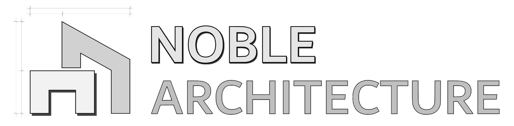

Drawn in the NPR Viewport with the look of NPR Parameters (the viewport opens when Export is pressed). A scene gives its own camera; the model is drawn whole, as in the NPR Viewport, so a scene's hidden tags are not applied. SketchUp's view never moves.
The engine's own settings file (seed, sun, pen, wash, sky, paper and composition): the PainterlyNPR app opens it too. A loaded look becomes this model's, as one step that Undo in SketchUp takes back.
PainterlyNPR's technical pens drawn by its own pen, with a 100 mm scale ticked every millimetre. Print the PDF at 100% (actual size) and check the scale with a ruler. Saved in the folder above, under the engine's own name.